当天坐了最早的一班欧洲之星到巴黎，一个是为了节省时间，一个是因为学生太穷了，最早一班列车五点出发特别便宜。
欧洲之星是链接伦敦和巴黎的一班列车，于1994年开始运行，横跨英吉利海峡，链接英国伦敦圣潘克拉斯车站和法国巴黎北站。其中圣潘克拉斯车站在大英博物馆和国王十字车站之间，可以顺便去看下著名的九又四分之三站台（我居然也忘了去看……）。
每一列欧洲之星由20节车厢编组而成，长达394米，重达800吨，其中18节为客车厢。若在长隧道（如海峡隧道）里发生事故，列车可以迅速解连为两部分从而加速疏散未受影响的车厢里的乘客。
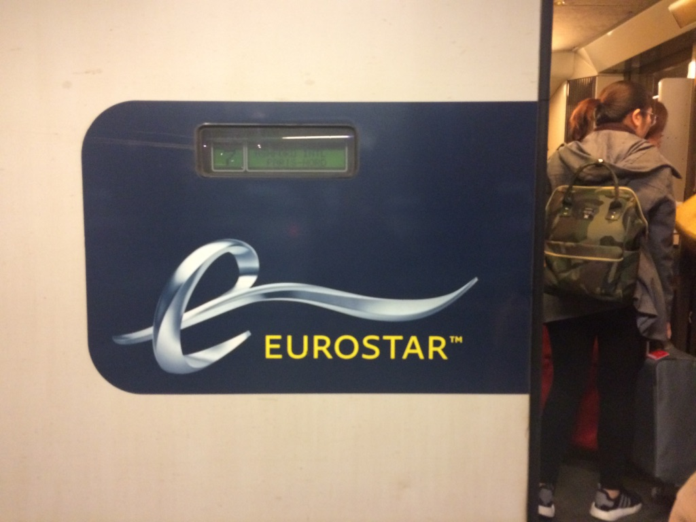
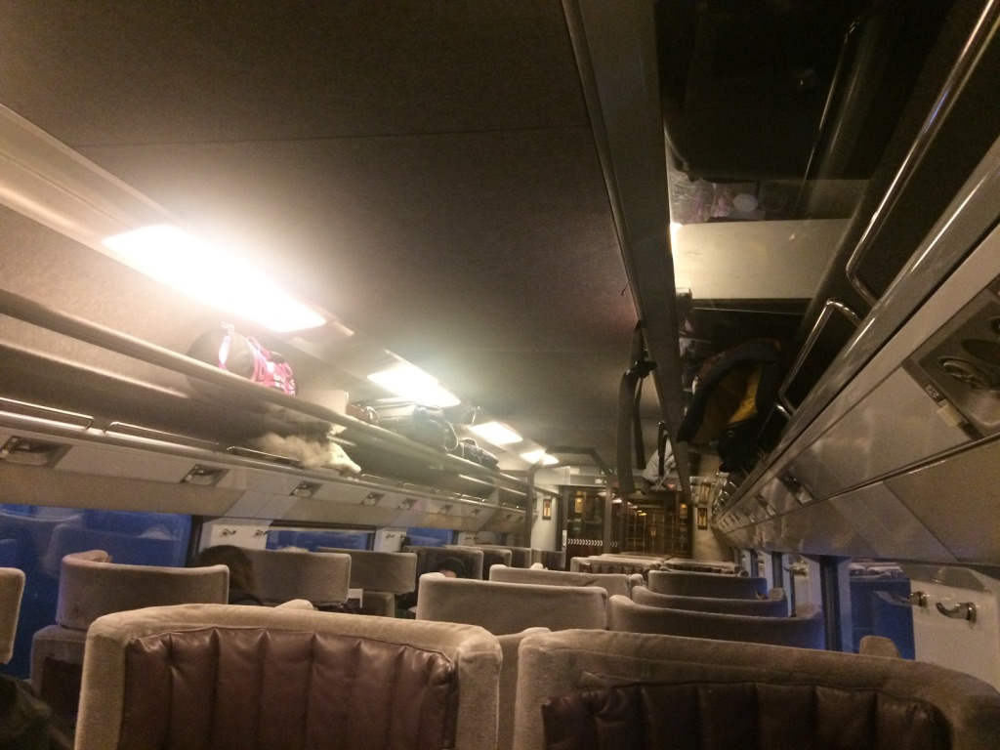
早上的法国雾蒙蒙的，列车两旁都是白茫茫的一片，有时能隐约看到树或者房子的轮廓快速从列车身边划过。全车人都在睡觉，而我没睡，不是因为我不困，是因为我期末一门课的实验报告还没写完。人生第一次跨州做作业，把美国的作业硬是带到了英吉利海峡写。（PS: 后面这门课拿了A
到了巴黎之后，一下车明显感觉到了局势的紧张，跟悠闲的伦敦完全不一样，到处都是一排一排的，荷枪实弹的警察。都说法国治安不好，万万没想到会有这么严重，几乎等同于之前受到恐怖袭击之后的昆明火车站，到处都是抬着冲锋枪的警察和装甲车。于是我们几个决定在巴黎的所有行程全部都坐Uber，别把多的钱都花进去了。
蒙马特高地
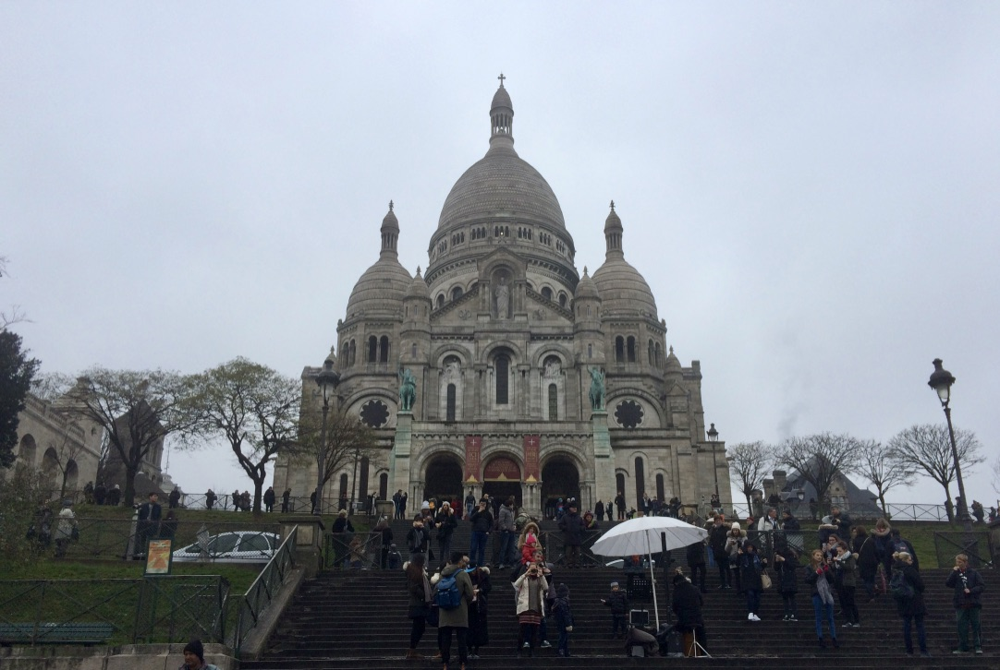
首先去了蒙马特高地，这是位于法国巴黎市十八区的一座130米高的山丘，在塞纳河的右岸。比较著名的景点就是白色圆顶的圣心堂和圣彼埃尔教堂。

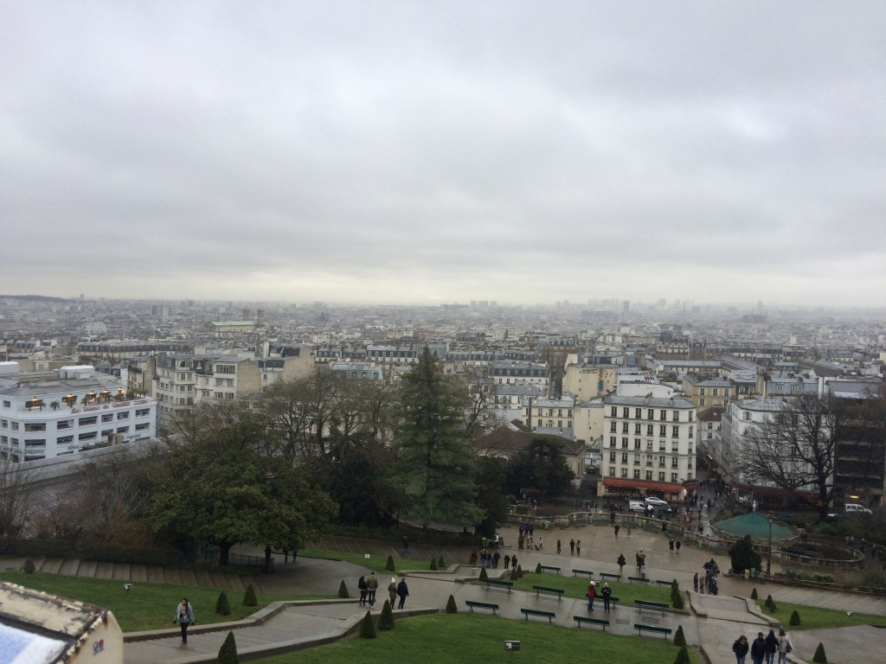
红磨坊
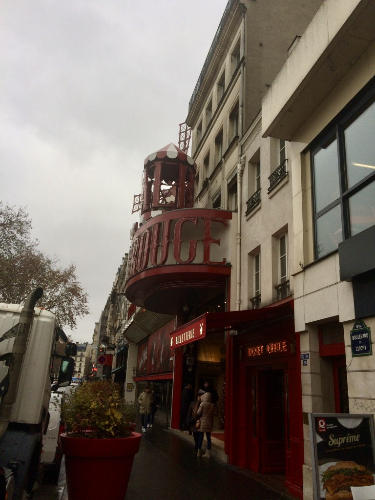
红磨坊是巴黎著名的红灯区。1870年普法战争后，饱受战争之苦的人们需要寻找一个解脱放松的地方，于是酒吧和歌舞厅就成了当时人们的首选。红磨坊始建于1889年，在克里希大道上，因屋顶上仿造的红风车而闻名于世。
值得一提的是，平安夜晚上由于一小伙伴安排失误，原本要去巴黎排名第一的餐厅吃饭的，结果餐厅关门，于是在红磨坊地区找了一家华人开的寿司店吃到了平安夜。十分难得的体验，不知道知乎有没有“在红灯区度过平安夜是一种怎么样的体验？“这种问题可以让我回答下的。
蓬皮杜
蓬皮杜中心内部包括公共资讯图书馆、法国国立现代艺术美术馆与声学、音乐研究和协作学院。
为了选出蓬皮杜中心的设计，当时举办建筑设计比赛，并将结果公布于1971年。蓬皮杜中心完工后，引起法国社会大众诸多争议，由于它与巴黎的传统风格建筑完全相反，造成许多巴黎市民无法接受，但也有艺文人士大力支持，有人则称它是“市中心的炼油厂”。
可以很清楚的看到，这栋建筑被各种管道包围，宛如一个化工厂。

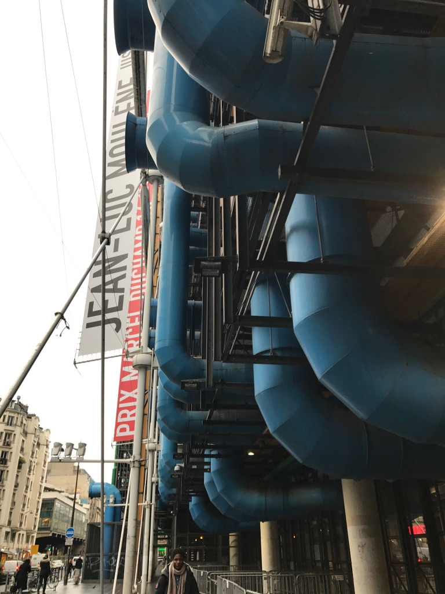
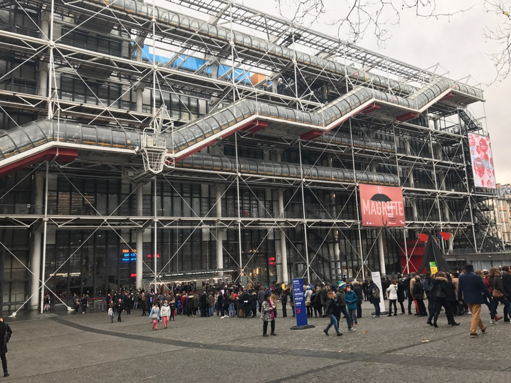
卢浮宫
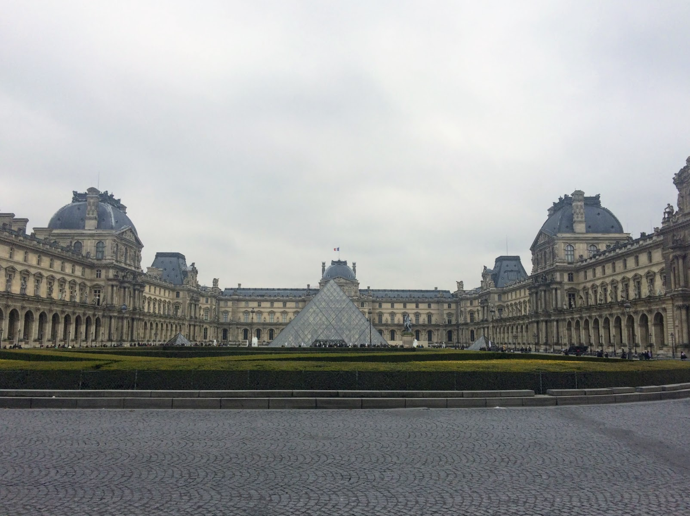
世界四大博物馆之首卢浮宫。原本是法国的王宫，始建于12世纪末，最初的作用是监狱与防御性的城堡，后来经过包括拿破仑在内的多位国王扩建形成了今天看到的卢浮宫。拿破仑在征服欧洲各国的同时，将被征服国家的艺术品大量运往法国，送至卢浮宫（此时已改名为“拿破仑博物馆”）展出，还增加了古罗马和古埃及艺术品展厅。但随着1815年拿破仑的第二次退位和终生放逐，卢浮宫藏品中约有5000多件艺术品被归还给原来所属国。
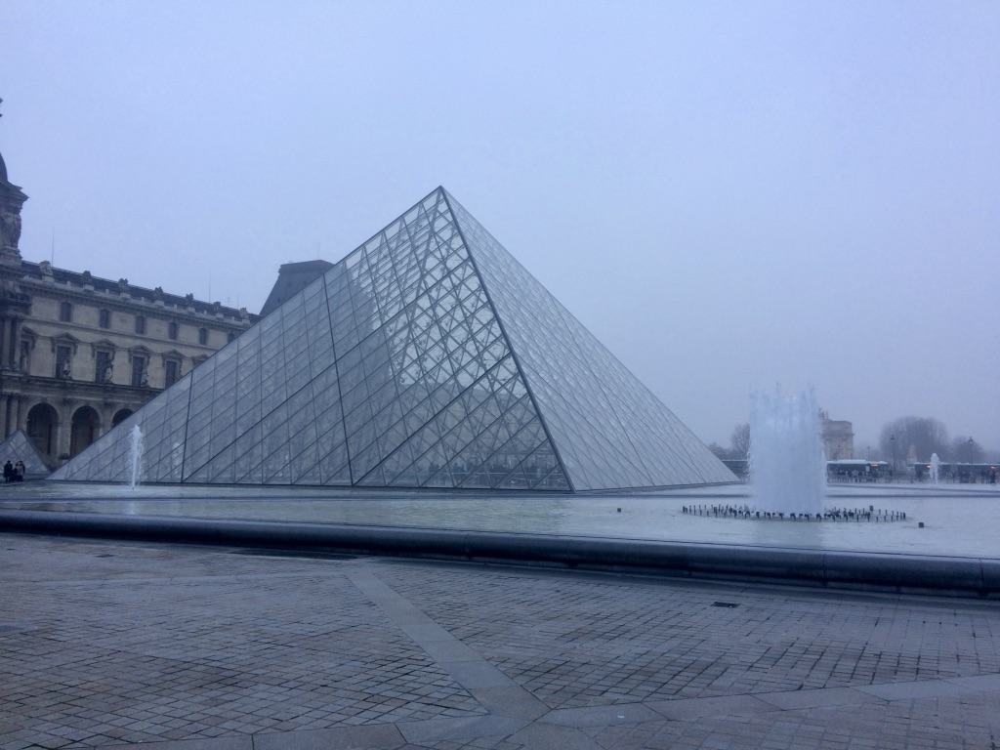
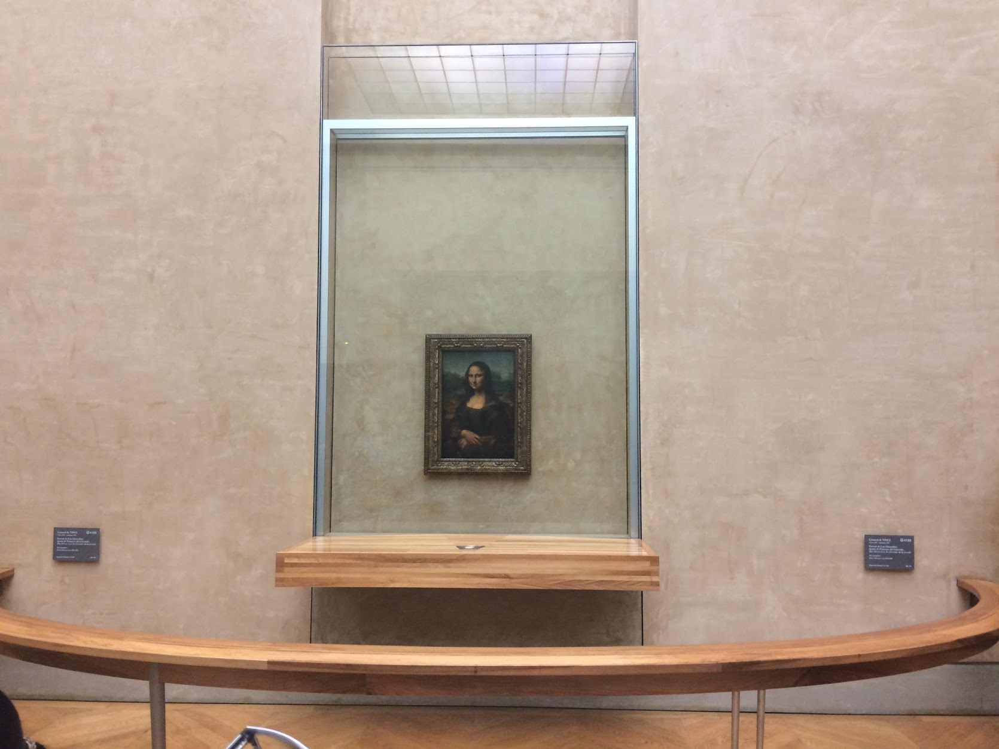
此后的100多年里，卢浮宫的收藏范围不断扩大，加入了东方（远东）、亚述、古埃及等时代的藏品。随着藏品数量的增多，展览空间越来越小。1981年，法国政府决定将卢浮宫建筑群的全部建筑划拨博物馆，并对卢浮宫实施了大规模的整修。由华裔美籍设计师贝聿铭设计的位于卢浮宫中央广场上的透明金字塔建筑。整修后的卢浮宫于1989年重新开放。
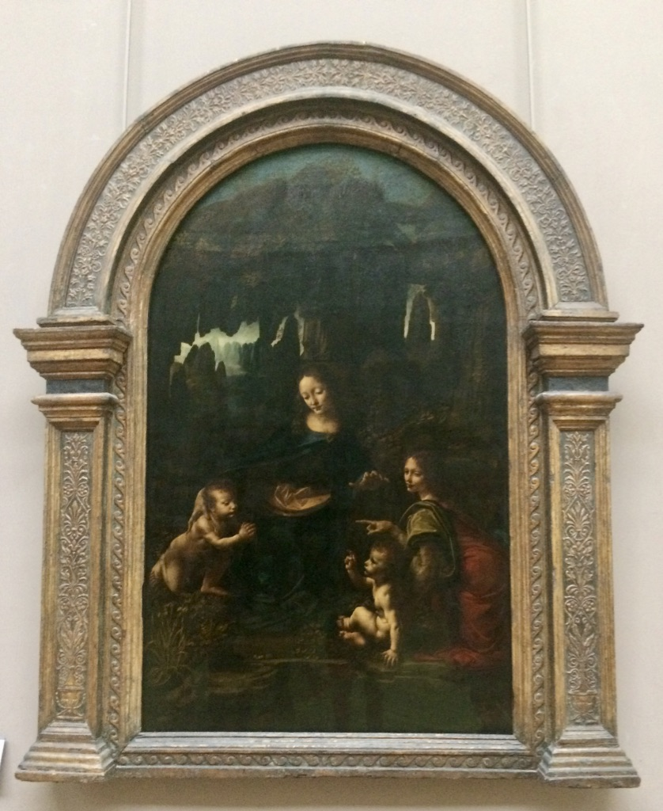
欧洲的博物馆有个好处就是，你只要是欧盟学校的学生，凭着学生证就可以免费进去参观，卢浮宫也不例外。然而问题在于一行人中只有我一个是美国从美国来的，其他人都有英国学生证，让我出钱买门票我心里有点不平衡。于是乎我灵机一动，大声告诉工作人员，我说约克（York）来的，虽然我的学校在纽约（New York）但是约克就是约克，前面加了个”New“也依旧是约克。 凭借着这一波发挥，我成功逃掉了此次欧洲之行的所有的博物馆门票。（巴士底狱除外，等下会说）。
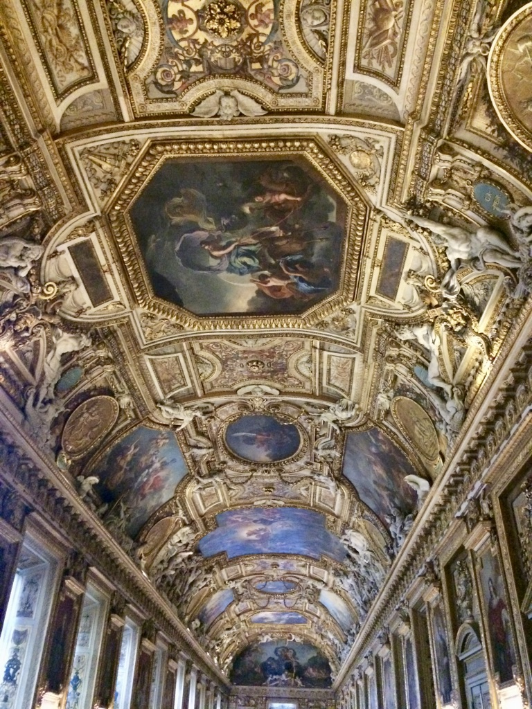
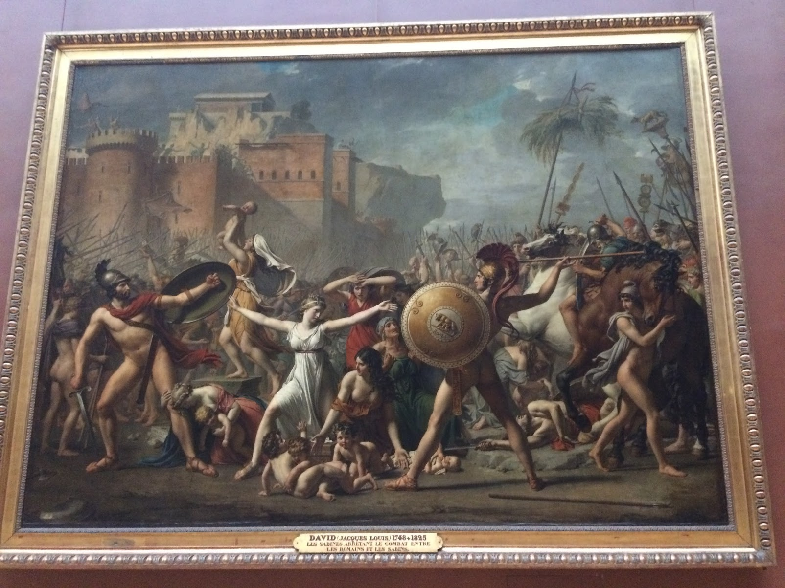
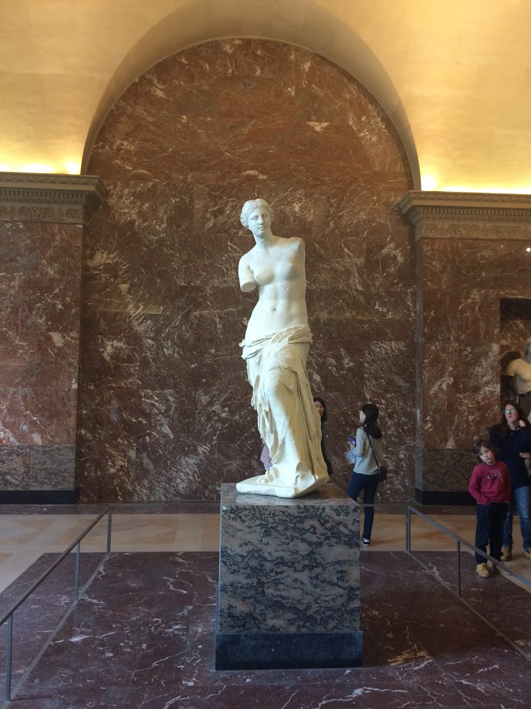
巴黎古监狱
巴黎古监狱是巴黎昔日的王宫和监狱之一，靠近巴黎圣母院。它是大型建筑群司法宫的一部分。在法国大革命期间，许多囚犯从这里送往巴黎各处上断头台。
我们到巴士底狱的时候天已经快黑了，游人不多。然而我们正准备拿着学生证混进去的时候，工作人员得知我们是英国的学生之后直接拒绝了我们入内，要求买门票。理由是英国已经脱离了欧盟，Not European anymore。这工作人员也够时尚的，英国连脱欧的手续都还没开始办她就直接把英国排除在外了。
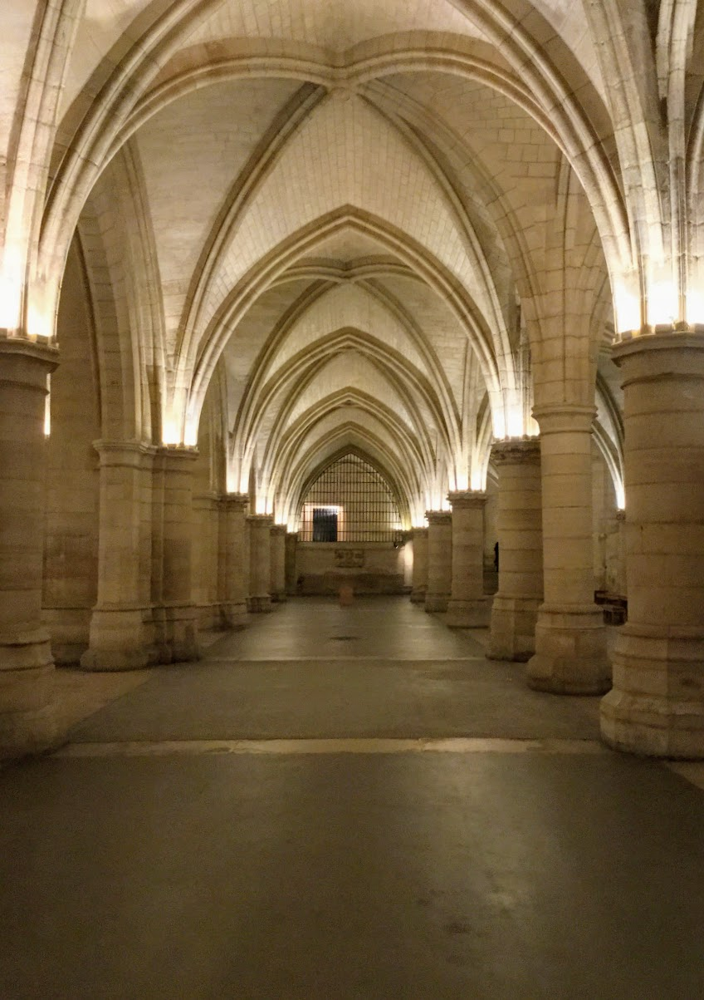
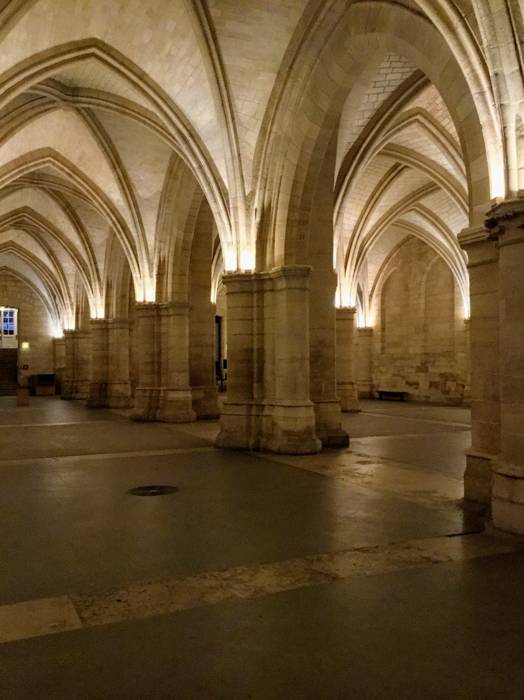
原来今生，我也走过如此美好之地。